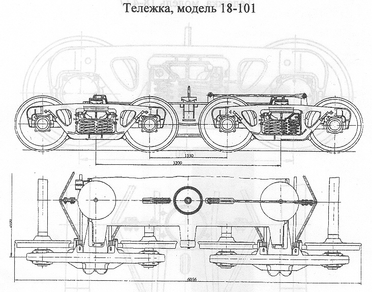

Назначение: для подкатки под 8-осные грузовые вагоны
Параметры
| Номер проекта | |
| Технические условия | |
| Модель | 18-101 |
| Изготовитель | ПО "Ждановтяжмаш" |
| Масса тележки, т | 12 |
| База, мм | 3200 |
| Статический прогиб рессорного комплекта, мм | 46-50 |
| Относительная сила трения цилиндрического фрикционного гасителя колебаний, % | 8-10 |
| Гибкость рессорного комплекта, м/МН | 1,13-1,232 |
| Колеса цельнокатанные диаметром, мм | 950 |
| Тип оси | РУ1; РУ1Ш |
| Высота опорной поверхности подпятника от головки рельса,мм | 858 |
| Скорость конструкционная, км/ч | 120 |